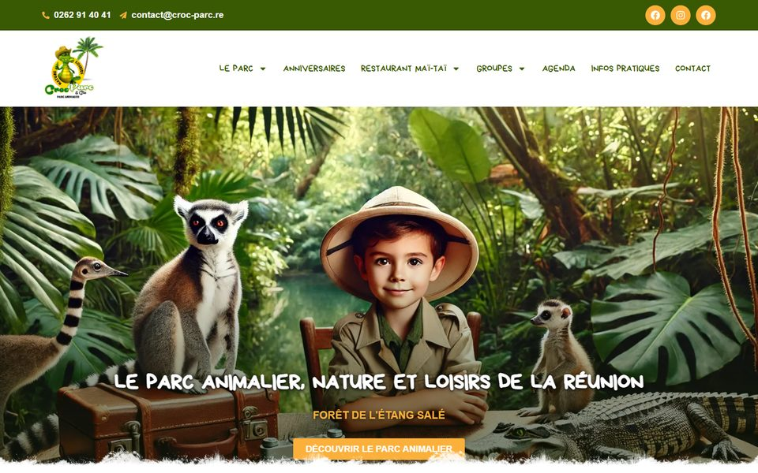

Compétence acquise
Aurélie
Formée par Jonathan, elle monte aujourd’hui des dossiers de subvention pour d’autres structures en s’appuyant sur l’IA.
Transmission · La Réunion
Jonathan transmet depuis 15 ans : en école de cirque, avec les conservatoires, en stages, et aujourd’hui l’IA et l’automatisation aux professionnels, indépendants, prestataires et petites équipes.
Vous avancez niveau par niveau, à votre rythme, sur vos propres outils, et vous repartez avec un outil qui tourne.
Étape 2 · La carte du parcours
Chaque accompagnement part de ce que vous faites chaque semaine : vos outils, vos mails, vos contenus, vos tâches répétitives. Touchez un niveau pour découvrir les compétences débloquées. Les niveaux se combinent, vous choisissez votre point de départ.
Compétences débloquées
Vous pouvez débuter : Jonathan explique avec des mots simples.
Compétences débloquées
Exemples travaillés sur vos propres cas.
Compétences débloquées
Vous repartez avec un outil qui tourne et vous savez le faire vivre.
Étape 3 · Mini-quiz
Trois questions, quelques secondes. Le résultat vous propose un niveau de départ et un format. Vos réponses restent sur votre écran : le quiz fonctionne dans votre navigateur.
Question 1 sur 3
Étape 4 · L’animateur
Jonathan a été formateur dans une école de cirque. Il intervient avec les conservatoires de Saint-Denis, Saint-André et Saint-Paul, et mène des stages de transmission et de formation un peu partout. Cet univers, celui des arts vivants, a façonné sa manière de transmettre : le numérique s’apprend comme un geste, en le pratiquant.
Jonathan y a été formateur.
Interventions avec les conservatoires de Saint-Denis, Saint-André et Saint-Paul.
Des stages de transmission et de formation, un peu partout.
Directeur artistique, avec 15 ans d’animation de groupes et d’ateliers.
Au cirque, on commence avec une balle, puis deux, puis trois. Les niveaux du parcours suivent la même progression. Touchez une valeur pour voir.
Niveau 1. Un premier outil bien en main : l’IA au quotidien.
Sur la piste comme devant l’écran, la logique reste la même : on montre, on essaie ensemble, puis vous pratiquez en autonomie.
Étape 5 · Transmission en équipe

Au Croc Parc, le parc animalier de L’Étang-Salé, Jonathan est très présent. Il transmet à l’équipe la gestion du quotidien numérique :
Chaque compétence passe de Jonathan à l’équipe, un geste après l’autre.
Compétence acquise
Formée par Jonathan, elle monte aujourd’hui des dossiers de subvention pour d’autres structures en s’appuyant sur l’IA.
Agent IA transmis
À Saint-Denis, Jonathan lui a transmis un agent IA pour accompagner son activité.
Étape 6 · Les formats
Pour les professionnels, indépendants, prestataires et petites équipes, ainsi que pour les structures de formation.
Des séances centrées sur votre activité : vos outils, vos mails, vos contenus. Vous avancez à votre rythme.
Entre professionnels, chacun avec ses outils, en profitant des questions des autres.
Jonathan assure l’animation ou la co-animation d’un module sur l’IA et l’automatisation, avec 15 ans d’animation de groupes derrière lui.
Jonathan construit des outils qui tournent en production. Vous les retrouvez dans les réalisations.
Questions fréquentes
Un message à Jonathan suffit : on regarde votre activité et on choisit ensemble le bon format. Le format et le tarif se définissent lors de cet échange, sur WhatsApp ou via la page contact.